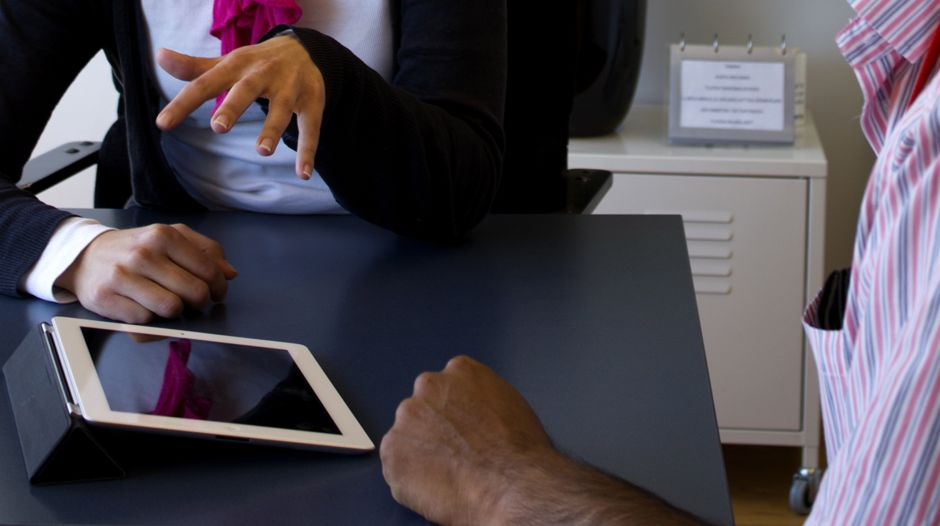
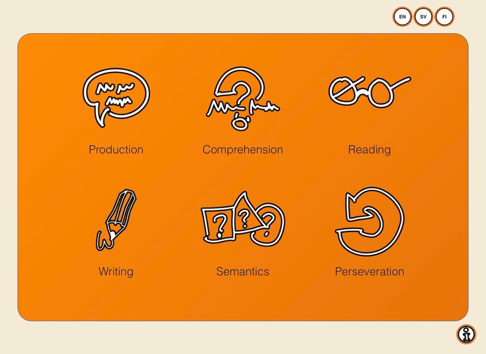
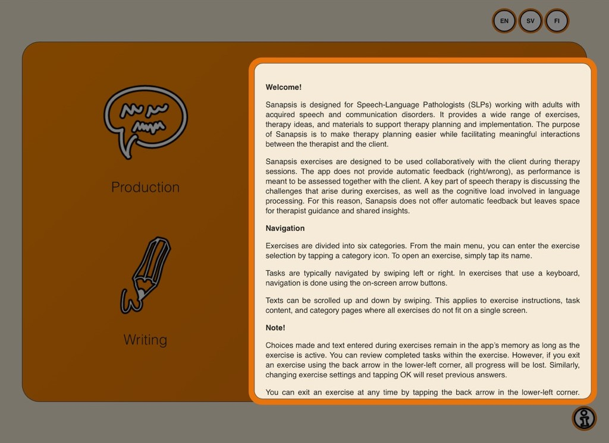

To get a feel for how SanapsisPro works, download SanapsisLite for a sample of exercises in all three languages (link below).

For speech-language pathologists
SanapsisPro
SanapsisPro is designed for speech-language pathologists. It supports you in planning and delivering adult neurological speech therapy, with a wide range of exercises, ideas for planning sessions, and materials for working through the exercises with your client. Over 35 exercise types are grouped into six categories, and all materials are available in three languages: English (US), Finnish, and Swedish.
Get SanapsisPro
SanapsisPro for iPad is a one-time purchase. There are no in-app purchases, now or in the future, and all updates, including new exercises, are free.
Download on the App Store
Try SanapsisLite first


Six exercise categories
Key features
In this video, you learn about the key features of SanapsisPro. We show you how to navigate between tasks and adjust the settings.
You will also learn why SanapsisPro does not provide direct feedback to the patient.
Production
Basic naming (nouns), creating a sentence from given words, and giving instructions.
Comprehension
YES/NO questions, following instructions, and questions based on text.
Reading
Tasks from simple word and picture matching to more complex pieces of text.
Writing
Copying letters with your fingertips, using the keyboard to fill in sentences, and complex writing tasks using paper and pen.
Semantics
Exercises such as “Is this simile true?”
Perseveration
Material to work with those who tend to "get stuck" in their speech or even comprehension.
Please note
SanapsisPro is intended for use in therapy under the guidance of a licensed speech-language pathologist (SLP). It is not designed for independent use. If you are looking for support for practicing on your own, take a look at Sanapsis+.